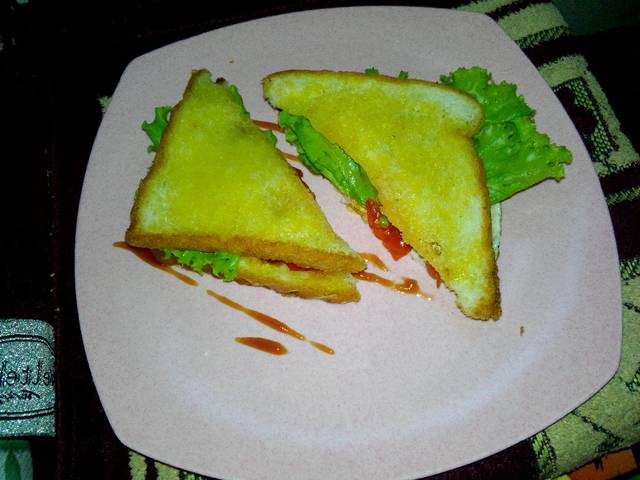

Resep Sandwich Telur

Berikut merupakan resep dari Sandwich telur
Bahan-bahan yang diperlukan untuk membuat sandwich telur
- 2 lembar roti tawar
- 1 butir telur
- 1 lembar selada
- 2 irisan tomat
- 2 irisan timun
- secukupnya Saus tomat
- secukupnya Saus cabe
- sesuai selera Lada bubuk
- sesuai selera Garam
- secukupnya Margarin
Berikut adalah langkah-langkah pembuatan sandwich telur
- Buat lubang pada roti tawar (lubang ini nantinya akan di isi telur)
- Olesi roti tawar dgn margarin, harus full kedua sisinya
- Panggang di teflon hingga keemasan. Untuk roti tawar yg bolong, saat di panggang, pecahkan telur tepat yg bolong itu. Taburi lada dan garam. Panggang sampai telur matang. Pake api kecil ya
- Tata sandwich. Roti yg ada telurnya di bawah, tambahkan saus. Selanjutnya tumpuk dgn timun, selada, tomat, beri saus lagi. Tutup dgn roti tawar yg utuh.